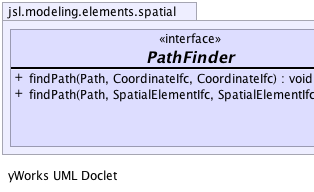

|
||||||||||
| PREV CLASS NEXT CLASS | FRAMES NO FRAMES | |||||||||
| SUMMARY: NESTED | FIELD | CONSTR | METHOD | DETAIL: FIELD | CONSTR | METHOD | |||||||||
public interface PathFinder
Interface for a path finding algorithm
|  |
| Method Summary | |
|---|---|
void |
findPath(Path path,
CoordinateIfc from,
CoordinateIfc to)
Fills the supplied path parameter with the points on the path, not including the starting location but including the goal location. |
void |
findPath(Path path,
SpatialElementIfc from,
SpatialElementIfc to)
Fills the supplied path parameter with the points on the path, not including the starting location but including the goal location. |
| Method Detail |
|---|
void findPath(Path path,
CoordinateIfc from,
CoordinateIfc to)
path - A list to hold the points on the pathfrom - to -
void findPath(Path path,
SpatialElementIfc from,
SpatialElementIfc to)
path - A list to hold the points on the pathfrom - to -
|
||||||||||
| PREV CLASS NEXT CLASS | FRAMES NO FRAMES | |||||||||
| SUMMARY: NESTED | FIELD | CONSTR | METHOD | DETAIL: FIELD | CONSTR | METHOD | |||||||||